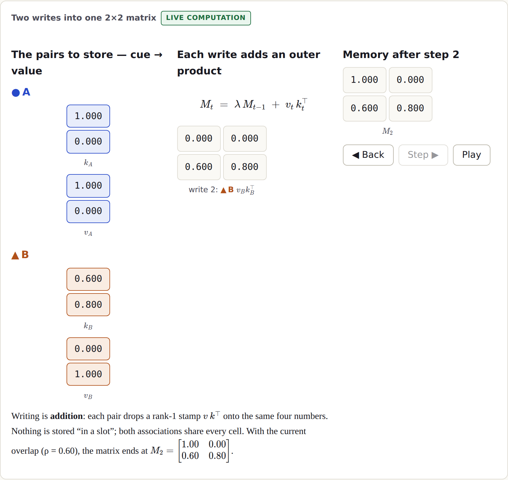
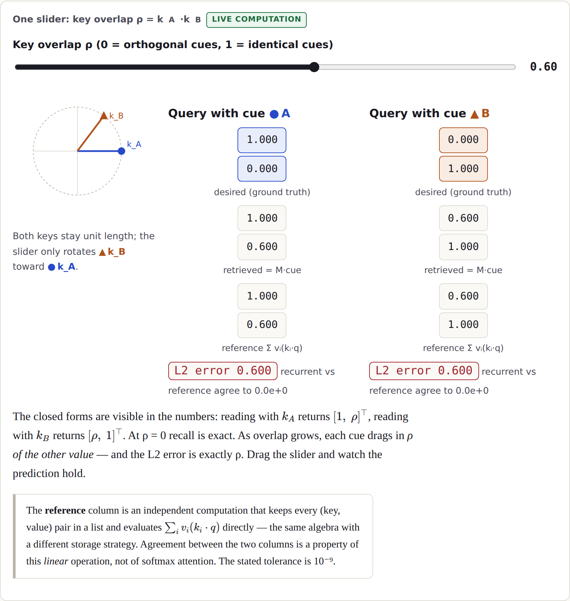
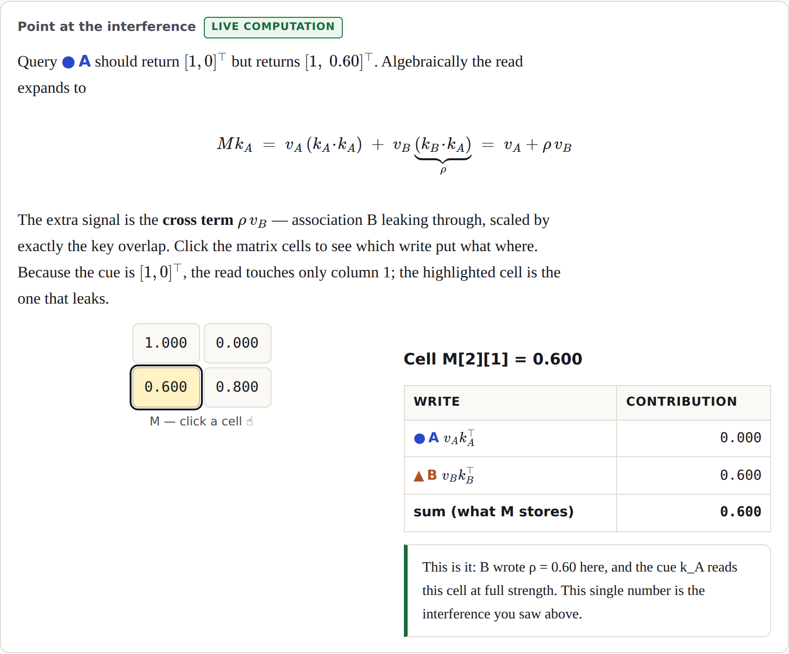
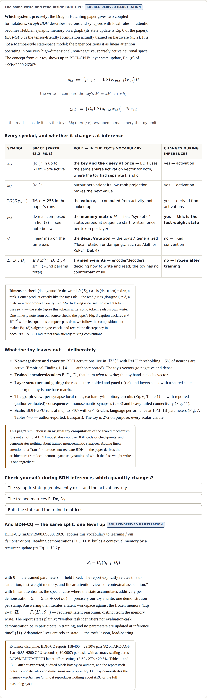
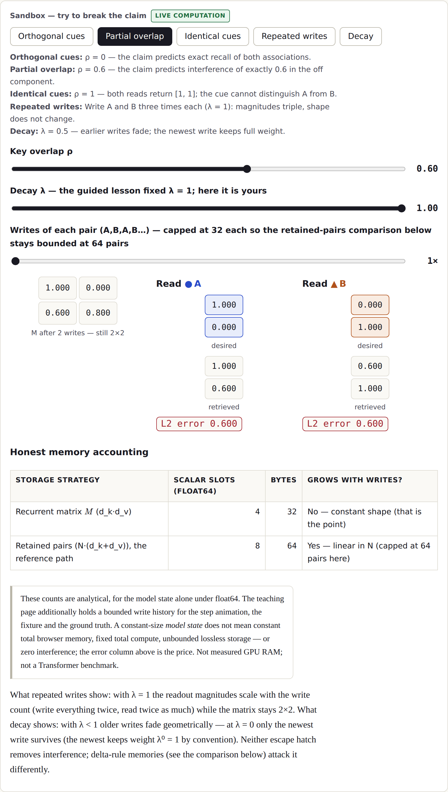

The claim the artifact teaches: for the additive memory in this explainer, storing two associations with orthogonal unit keys permits exact recall; increasing their key overlap introduces calculable interference while the recurrent matrix keeps the same shape and no trained parameters change.
A Transformer remembers by keeping every token: its key–value cache grows with context, and attention re-scans it at each step. An old alternative is back at the frontier: store relationships in rapidly changing connections — fast weights — and keep the state a fixed size. The minimal version, with column vectors, is a single matrix updated by an outer product per association and read by one matrix–vector product:
Mt = λ·Mt−1 + vt ktT retrieved(q) = Mt q
This is precisely the memory a linear-attention layer maintains — Schlag, Irie and Schmidhuber proved the equivalence in 2021 [3]. What makes it teachable is that at size 2×2 nothing is hidden: the learner can watch every scalar as memory succeeds, degrades, and fails.

Everything interesting is controlled by the key overlap ρ = kA·kB. The artifact opens already running
at ρ = 0.6; the learner drags one slider and watches truth sit beside estimate. Reading with cue A returns
[1, ρ] against a desired [1, 0] — the other association leaks in, scaled by exactly ρ, and the
displayed L2 error equals ρ. At ρ = 0 recall is exact. At ρ = 1 both cues are identical, both reads return
[1, 1], and the artifact reports a tie: the cue carries no information that could distinguish the two
memories, and declaring a winner would be fabrication.

The interference is not mysterious, and the artifact makes the learner point at its source: expanding the read gives
M k_A = v_A(k_A·k_A) + v_B(k_B·k_A). The second term — value B times the key overlap — lives in identifiable
matrix cells, and clicking any cell decomposes it into what each write contributed.

The Dragon Hatchling (BDH) reformulates attention as synaptic memory [4]. Its GPU formulation carries a per-layer fast
state ρ updated, per token, by an outer product of a learned value with the current sparse activation, then decayed
(Eq. 8 of the paper): ρt,ℓ := (ρt−1,ℓ + LN(E yt,ℓ−1) xt,ℓT) U,
read as ρx inside ReLU-gated machinery. The mapping to the toy is one-to-one — write, read, decay, state — with the
differences stated: the value is learned (LN(Ey)), the key and query are the same non-negative activation x, and
everything runs at n up to ~10⁶ dimensions with ~5% sparsity (author-reported). The artifact's variable-role table answers, for
every symbol, the question the toy trains: does it change during inference? The state does; the trained matrices
E, Dx, Dy do not. BDH is not a Mamba-style state-space model, and the artifact never presents the toy as an
official BDH implementation.

BDH-CQ [5] lifts the same distinction to task acquisition: reading demonstrations accumulates a contextual memory
St = Uθ(St−1, Dt) — the report explicitly names additive per-demonstration
accumulation as its linear-attention special case — and answering iterates a latent workspace against that frozen memory,
with “no parameters … updated at inference time” (§1). On ARC-AGI-1 it reports 118/400 (29.50%) pass@2 at roughly 0.85
H200 GPU-seconds per task, with accuracy scaling across latent-effort levels (21% → 27% → 29.5%). Those numbers are
author-reported; the audit that reproduced them was run by co-authors (semi-independent), the update-rule internals are
proprietary, and the report itself flags a training-data overlap caveat — all of which the artifact states next to the numbers.
The sandbox hands over decay λ and repeated writes, with presets for the claim's edge cases — orthogonal, partial overlap, identical cues, repeated writes, decay. Repeating writes scales magnitudes while the matrix stays 2×2; decay fades old writes geometrically (at λ = 0 only the newest survives, weight λ⁰ = 1 by stated convention). Neither removes interference — which is why DeltaNet replaces the blind add with an error-correcting write (its motivation quotes key “collisions” directly [1]) and Gated DeltaNet adds learned erasure [2]. At scale the stakes are stark: with unlimited context on WikiText-103, the purely additive model degrades beyond perplexity 260 while the delta-rule variant of the same size reaches 29.4 [3, Table 4].

The artifact ends by asking the learner to predict a held-out setting before the app computes it, then to say which state
changed and what remains a limitation — deterministic feedback, no grader model. Everything is reproducible from the
repository: npm ci && npm test && npm run build && npm run smoke. The claim-to-source ledger
(docs/RESEARCH.md) gives an equation-level locator and an evidence label for every scientific statement above —
including which results are author-reported and which have no independent reproduction yet.